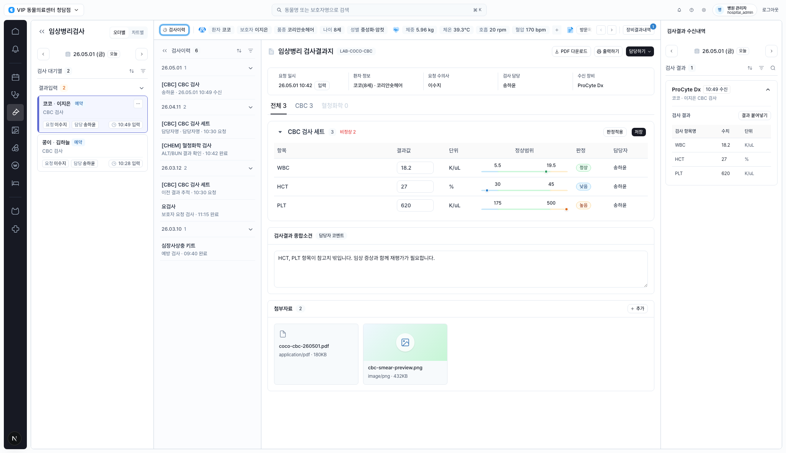
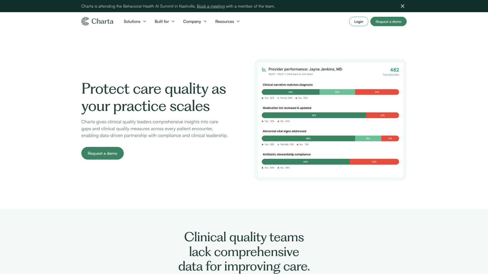
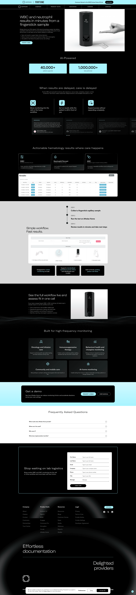
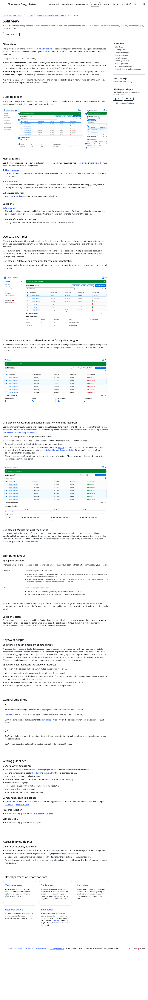

Design Improvement: 임상병리 검사결과지 Workspace
TL;DR
가장 큰 기회는 검사결과지를 입력 화면에서 이상치 판독과 장비값 대조가 먼저 보이는 검토 화면으로 끌어올리는 것입니다. 현재의 조용한 운영형 톤은 유지하고, 이상치 요약, row-level 강조, 우측 reconciliation, 하단 판독 액션을 강화하세요.
Current State

1. 검사결과지 상단에 판독 요약 스트립 추가 Highest impact
결과지 제목 아래에 이상 2, 정상 1, 장비값 대조 완료, 소견 필요 같은 compact summary를 넣고 주요 이상 항목을 한 줄로 먼저 노출합니다.

┌ 임상병리 검사결과지 LAB-COCO-CBC [담당하기] ┐ │ 코코 · CBC 검사 26.05.01 10:42 ProCyte Dx │ ├───────────────────────────────────────────────────────────────────────┤ │ 이상 2 정상 1 장비값 일치 3/3 소견 필요 │ │ HCT 27 낮음 · PLT 620 높음 │ └───────────────────────────────────────────────────────────────────────┘
2. 이상치 row를 badge보다 먼저 보이게 만들기
이상 row에는 왼쪽 status rail, 결과값 강조, 이전값/장비값 delta chip을 추가해 어떤 값이 왜 위험한지 한 번에 보이게 합니다.

┌ CBC 검사 세트 비정상 2 [저장] ┐ │ 항목 결과값 기준범위 장비값 판정 │ │ WBC 18.2 5.5 ───── 19.5 일치 정상 │ │▌HCT 27 ↓ 30 ───── 45 일치 낮음 │ │▌PLT 620 ↑ 175 ───── 500 일치 높음 │ └──────────────────────────────────────────────────────────────────┘
3. 우측 수신내역을 장비값 대조 패널로 승격
선택된 장비 수신값을 중앙 결과지와 1:1로 비교하고, 각 행에 일치, 차이, 미입력 상태를 붙입니다. 붙여넣기 전에 변경 범위를 확인하게 만드는 안전 UX입니다.

┌ 장비값 대조: ProCyte Dx 10:49 수신 ┐ │ WBC 현재 18.2 장비 18.2 일치 │ │ HCT 현재 27 장비 27 일치 │ │ PLT 현재 620 장비 620 일치 │ │ │ │ [차이만 적용] [전체 붙여넣기] │ └──────────────────────────────────────┘
4. 소견/첨부 영역을 판독 완료 체크포인트로 정리
소견 입력 위에 필수 확인, 보호자 공유 가능, 진료 재평가 권장 같은 체크포인트를 두고, 첨부자료는 작은 evidence strip으로 압축합니다.
┌ 판독 체크포인트 ─────────────────────────────┐ │ [x] HCT/PLT 재평가 필요 [ ] 보호자 공유 가능 │ │ [ ] 응급 알림 필요 │ ├ 종합소견 │ │ HCT, PLT 항목이 참고치 밖입니다... │ ├ 첨부 evidence │ │ coco-cbc.pdf smear-preview.png │ └───────────────────────────────────────────────┘
What's Working
- 4-column shell이 명확합니다. 업무 큐, 이력, 결과지, 수신내역의 역할이 이미 나뉘어 있습니다.
- 색상 사용이 과하지 않아 의료 업무 화면답게 차분합니다.
- 환자 context chip과 정상범위 visual range가 있어 단순 표보다 임상 맥락이 좋습니다.
- 장비 수신내역을 우측에 둔 방향은 맞습니다. 이제 대조 역할만 더 선명히 하면 됩니다.
All References
| Reference | Source | Why Used |
|---|---|---|
| Charta clinical quality score | Lazyweb | 임상 지표를 상단에서 색상 막대로 요약하는 패턴 |
| Commure/Athelas WBC results | Lazyweb | 검사 결과를 actionable metric과 workflow로 연결하는 패턴 |
| Cloudscape split view | Web | 선택 항목 상세/비교 정보를 우측 패널에 유지하는 패턴 |
| Pencil & Paper enterprise data tables | Web | 복잡한 테이블을 스캔 가능하게 만드는 원칙 |